Show code
pacman::p_load(sf, tmap, tidyverse)In this hands-on exercise, we will learn how to create choropleth maps.
Choropleth mapping is a technique for symbolising geographic units, such as countries, provinces, states, counties, or census areas using shaded patterns or graduated colours. For instance, a social scientist might use a choropleth map to show the spatial distribution of Singapore’s elderly population, organised by the Master Plan 2014 Subzone Boundary.
By the end of the session, we will be able to:
tmap package.For this exercise, we will install and launch several packages that support spatial data handling, data wrangling, and thematic mapping. The key package is tmap, which is designed for thematic cartography in R. We will also use sf for spatial data handling and tidyverse for data preparation.
pacman::p_load(sf, tmap, tidyverse)In this exercise, we will work with two datasets:
mpsz <- st_read(dsn = "../data/MP14_SUBZONE_WEB_PL")Reading layer `MP14_SUBZONE_WEB_PL' from data source
`/Users/belle/Library/CloudStorage/OneDrive-SingaporeManagementUniversity/ISSS608/freshstart/data/MP14_SUBZONE_WEB_PL'
using driver `ESRI Shapefile'
Simple feature collection with 323 features and 15 fields
Geometry type: MULTIPOLYGON
Dimension: XY
Bounding box: xmin: 2667.538 ymin: 15748.72 xmax: 56396.44 ymax: 50256.33
Projected CRS: SVY21popdata <- read_csv("../data/respopagesextod2011to2020.csv")For mpsz
glimpse(mpsz)Rows: 323
Columns: 16
$ OBJECTID <int> 1, 2, 3, 4, 5, 6, 7, 8, 9, 10, 11, 12, 13, 14, 15, 16, 17, …
$ SUBZONE_NO <int> 1, 1, 3, 8, 3, 7, 9, 2, 13, 7, 12, 6, 1, 5, 1, 1, 3, 2, 2, …
$ SUBZONE_N <chr> "MARINA SOUTH", "PEARL'S HILL", "BOAT QUAY", "HENDERSON HIL…
$ SUBZONE_C <chr> "MSSZ01", "OTSZ01", "SRSZ03", "BMSZ08", "BMSZ03", "BMSZ07",…
$ CA_IND <chr> "Y", "Y", "Y", "N", "N", "N", "N", "Y", "N", "N", "N", "N",…
$ PLN_AREA_N <chr> "MARINA SOUTH", "OUTRAM", "SINGAPORE RIVER", "BUKIT MERAH",…
$ PLN_AREA_C <chr> "MS", "OT", "SR", "BM", "BM", "BM", "BM", "SR", "QT", "QT",…
$ REGION_N <chr> "CENTRAL REGION", "CENTRAL REGION", "CENTRAL REGION", "CENT…
$ REGION_C <chr> "CR", "CR", "CR", "CR", "CR", "CR", "CR", "CR", "CR", "CR",…
$ INC_CRC <chr> "5ED7EB253F99252E", "8C7149B9EB32EEFC", "C35FEFF02B13E0E5",…
$ FMEL_UPD_D <date> 2014-12-05, 2014-12-05, 2014-12-05, 2014-12-05, 2014-12-05…
$ X_ADDR <dbl> 31595.84, 28679.06, 29654.96, 26782.83, 26201.96, 25358.82,…
$ Y_ADDR <dbl> 29220.19, 29782.05, 29974.66, 29933.77, 30005.70, 29991.38,…
$ SHAPE_Leng <dbl> 5267.381, 3506.107, 1740.926, 3313.625, 2825.594, 4428.913,…
$ SHAPE_Area <dbl> 1630379.27, 559816.25, 160807.50, 595428.89, 387429.44, 103…
$ geometry <MULTIPOLYGON [m]> MULTIPOLYGON (((31495.56 30..., MULTIPOLYGON (…For popdata
glimpse(popdata)Rows: 984,656
Columns: 7
$ PA <chr> "Ang Mo Kio", "Ang Mo Kio", "Ang Mo Kio", "Ang Mo Kio", "Ang Mo K…
$ SZ <chr> "Ang Mo Kio Town Centre", "Ang Mo Kio Town Centre", "Ang Mo Kio T…
$ AG <chr> "0_to_4", "0_to_4", "0_to_4", "0_to_4", "0_to_4", "0_to_4", "0_to…
$ Sex <chr> "Males", "Males", "Males", "Males", "Males", "Males", "Males", "M…
$ TOD <chr> "HDB 1- and 2-Room Flats", "HDB 3-Room Flats", "HDB 4-Room Flats"…
$ Pop <dbl> 0, 10, 30, 50, 0, 0, 40, 0, 0, 10, 30, 60, 0, 0, 40, 0, 0, 10, 30…
$ Time <dbl> 2011, 2011, 2011, 2011, 2011, 2011, 2011, 2011, 2011, 2011, 2011,…::: callout-tip The mpsz object is stored as an sf object, which means it contains both geometry and attribute information. The popdata object is a tibble containing demographic records. Before mapping, we need to prepare the attribute data and then join it to the spatial layer using a common key field. :::
Before creating a thematic map, you need to wrangle the dataset to extract year 2020 values and compute the required variables:
PA → Planning Area
SZ → Subzone
YOUNG → population aged 0–24
ECONOMY ACTIVE → population aged 25–64
AGED → population aged 65+
TOTAL → sum of all age groups
DEPENDENCY → ratio of (YOUNG + AGED) to ECONOMY ACTIVE ### Data wrangling Functions used for wrangling
pivot_wider() from tidyr → reshapes the dataset into wide format.
mutate(), filter(), group_by(), and select() from dplyr → used to compute new variables, filter for 2020, group by PA/SZ, and select relevant columns.
popdata2020 <- popdata %>%
filter(Time == 2020) %>%
group_by(PA, SZ, AG) %>%
summarise(`POP` = sum(`Pop`)) %>%
ungroup() %>%
pivot_wider(names_from=AG,
values_from=POP) %>%
mutate(YOUNG = rowSums(.[3:6])
+rowSums(.[12])) %>%
mutate(`ECONOMY ACTIVE` = rowSums(.[7:11])+
rowSums(.[13:15]))%>%
mutate(`AGED`=rowSums(.[16:21])) %>%
mutate(`TOTAL`=rowSums(.[3:21])) %>%
mutate(`DEPENDENCY` = (`YOUNG` + `AGED`)
/`ECONOMY ACTIVE`) %>%
select(`PA`, `SZ`, `YOUNG`,
`ECONOMY ACTIVE`, `AGED`,
`TOTAL`, `DEPENDENCY`)Before performing the georelational join, the values in the PA and SZ fields are converted to uppercase. This ensures consistency with the SUBZONE_N and PLN_AREA_N fields, which are already uppercase.
popdata2020 <- popdata2020 %>%
mutate(across(c(PA, SZ), toupper)) %>%
filter(`ECONOMY ACTIVE` > 0)Next, left_join() from dplyr is used to merge the spatial data (mpsz) with the attribute table (popdata2020), matching SUBZONE_N with SZ. Using mpsz as the left table ensures the result remains a simple features (sf) data frame.
mpsz_pop2020 <- left_join(mpsz, popdata2020,
by = c("SUBZONE_N" = "SZ"))Finally, the joined dataset is saved with write_rds() preserving both geometry and attributes for later use.
write_rds(mpsz_pop2020, "../data/rds/mpszpop2020.rds")There are two main approaches to creating thematic maps in tmap:
The simplest way to draw a choropleth map is with qtm(). It produces a standard choropleth quickly and often gives a good default visualisation.
tmap_mode("plot")
qtm(mpsz_pop2020,
fill = "DEPENDENCY")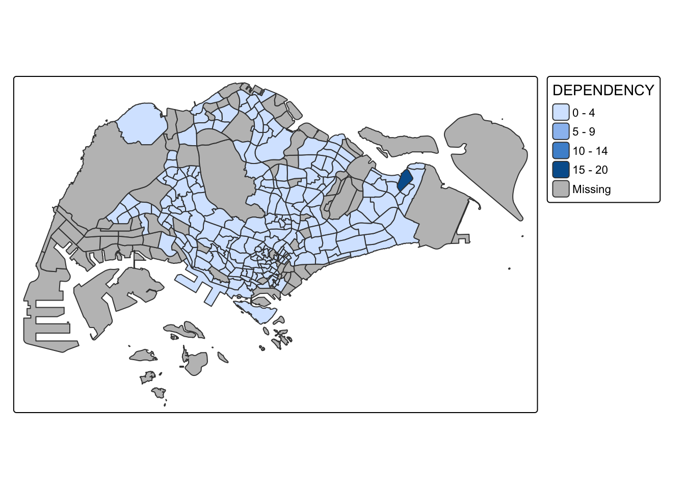
:::call-out tip tmap_mode() → “plot” creates a static map; “view” switches to interactive mode.fill argument → maps the chosen attribute (e.g., DEPENDENCY) to polygon shading:::
While qtm() is convenient, it limits control over layer aesthetics. For high-quality cartographic maps, use tmap’s building blocks:
tm_shape(mpsz_pop2020)+
tm_polygons(fill = "DEPENDENCY",
fill.scale = tm_scale_intervals(
style = "quantile",
n = 5,
values = "brewer.blues"),
fill.legend = tm_legend(
title = "Dependency ratio")) +
tm_title("Distribution of Dependency Ratio by planning subzone") +
tm_layout(frame = TRUE) +
tm_borders(fill_alpha = 0.5) +
tm_compass(type="8star", size = 2) +
tm_grid(alpha =0.2) +
tm_credits("Source: Planning Sub-zone boundary from Urban Redevelopment Authorithy (URA)\n and Population data from Department of Statistics DOS",
position = c("left", "bottom"))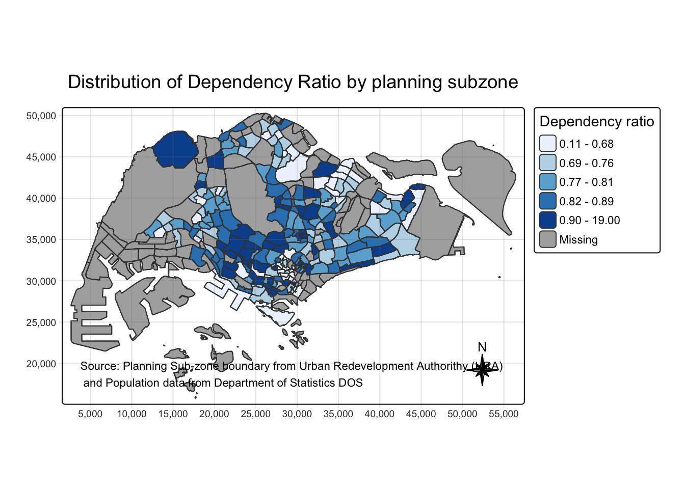
:::call-out tip Default binning method is “pretty”. Default colour scheme is YlOrRd from ColorBrewer. Missing values are shaded grey.:::
The foundation of a tmap visualisation is tm_shape(), which specifies the input dataset (e.g., mpsz_pop2020). You then add one or more layers such as tm_fill() or tm_polygons() to display the planning subzone polygons.
tm_shape(mpsz_pop2020) +
tm_polygons()
To create a choropleth map that shows the spatial distribution of a variable (like DEPENDENCY), we simply assign that variable to tm_polygons().
tm_shape(mpsz_pop2020)+
tm_polygons("DEPENDENCY")
:::call-out tip - Interval binning method → “pretty” - Colour scheme → YlOrRd from ColorBrewer - Missing values → shaded grey :::
The tm_polygons() function is essentially a wrapper around tm_fill() and tm_borders().
tm_shape(mpsz_pop2020)+
tm_fill("DEPENDENCY")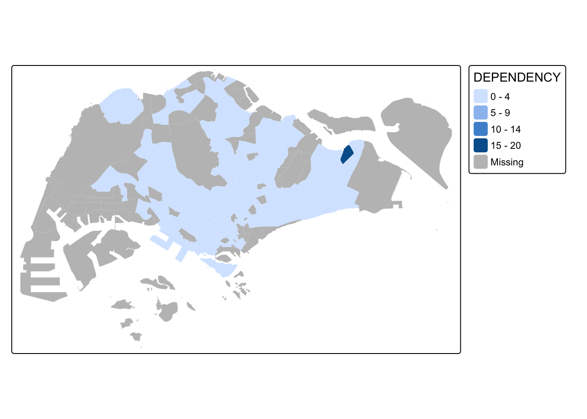
When using tm_borders(), we can customise:
tm_shape(mpsz_pop2020)+
tm_polygons(fill = "DEPENDENCY") +
tm_borders(lwd = 0.01,
fill_alpha = 0.1)This combination lets you shade polygons by dependency values and overlay light‑grey boundary lines for clarity.
Most choropleth maps use some form of data classification, which groups many observations into ranges or classes for clearer visualisation.
The tmap package supports ten classification methods: fixed, sd, equal, pretty (default), quantile, kmeans, hclust, bclust, fisher, jenks
To specify a classification method, we use the style argument in either tm_fill() or tm_polygons(). ### Plotting choropleth maps with built-in classification methods We will shows a quantile data classification that uses 5 classes
tm_shape(mpsz_pop2020)+
tm_polygons("DEPENDENCY",
fill.scale = tm_scale_intervals(
style = "jenks",
n = 5)) +
tm_borders(fill_alpha = 0.5)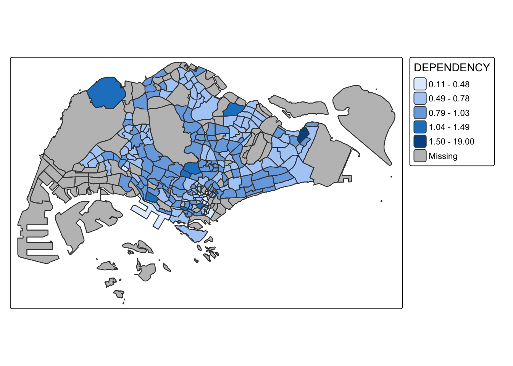
Now, equal data classification is used
tm_shape(mpsz_pop2020)+
tm_polygons("DEPENDENCY",
fill.scale = tm_scale_intervals(
style = "equal",
n = 5)) +
tm_borders(fill_alpha = 0.5)Let’s try different numbers of classes
tm_shape(mpsz_pop2020)+
tm_polygons("DEPENDENCY",
fill.scale = tm_scale_intervals(
style = "equal",
n = 2)) +
tm_borders(fill_alpha = 0.5)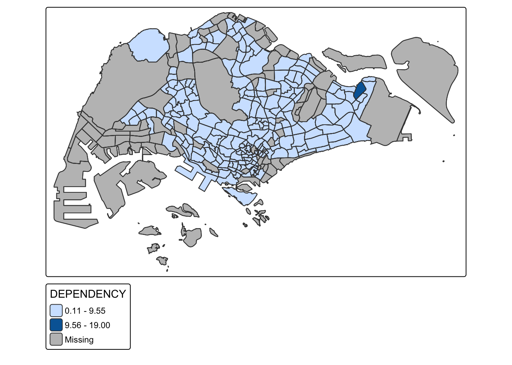
Most built‑in classification styles in tmap calculate category breaks automatically. To override these defaults, you can explicitly define breakpoints using the breaks argument in tm_fill() or tm_polygons().
In tmap, breaks must include both the minimum and maximum values. That means if you want n categories, you must supply n+1 break values in increasing order. Before setting breaks, it’s good practice to examine descriptive statistics of the target variable. For example:
summary(mpsz_pop2020$DEPENDENCY) Min. 1st Qu. Median Mean 3rd Qu. Max. NAs
0.1111 0.7147 0.7867 0.8585 0.8763 19.0000 92 Based on the results, we cam define breakpoints at 0.60, 0.70, 0.80, and 0.90, plus a minimum (0) and maximum (1.00). This gives:
c(0, 0.60, 0.70, 0.80, 0.90, 1.00)We caan then pass this vector to the breaks argument when plotting the choropleth map, ensuring the subzones are shaded according to the custom classification scheme
tm_shape(mpsz_pop2020)+
tm_polygons("DEPENDENCY",
breaks = c(0, 0.60, 0.70, 0.80, 0.90, 1.00)) +
tm_borders(fill_alpha = 0.5)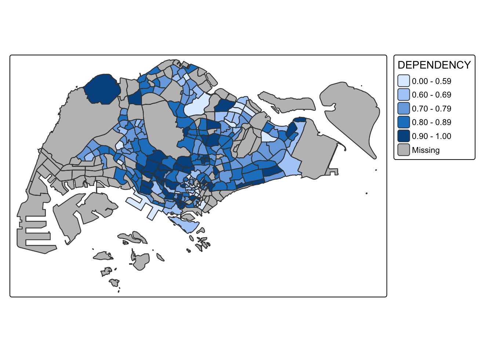
In tmap, we can customise the colour scheme of a choropleth map by applying a ColourBrewer palette. This is done by assigning the preferred palette to the values argument of tm_scale_intervals().
tm_shape(mpsz_pop2020)+
tm_polygons("DEPENDENCY",
fill.scale = tm_scale_intervals(
style = "quantile",
n = 5,
values = "brewer.greens")) +
tm_borders(fill_alpha = 0.5)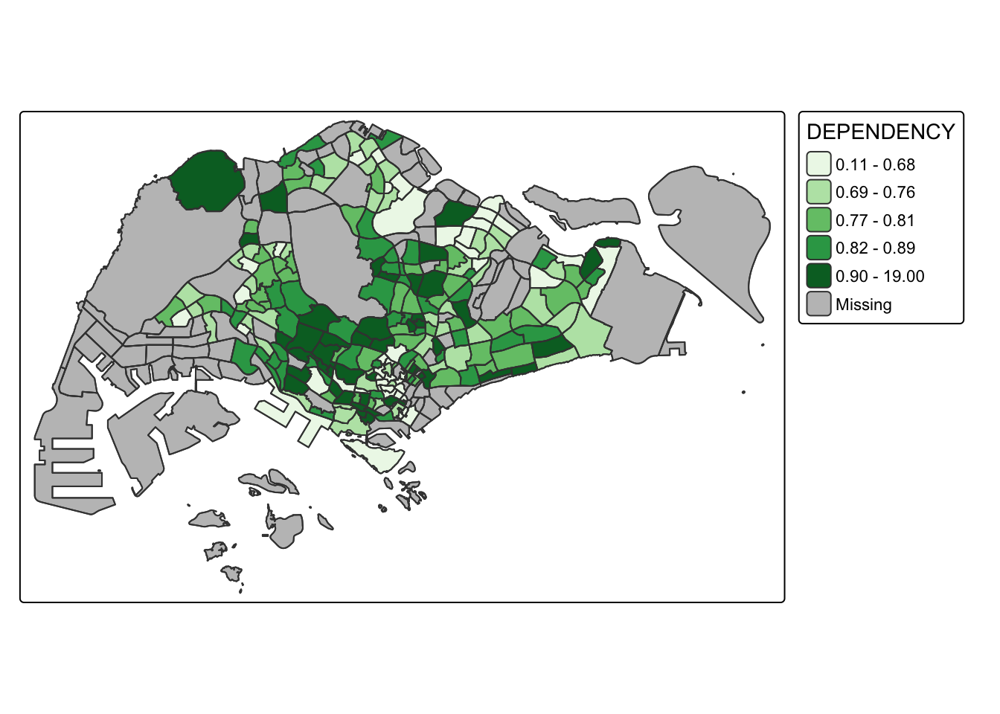
To reverse the colour shading, we add a “-” prefix.
tm_shape(mpsz_pop2020)+
tm_polygons("DEPENDENCY",
fill.scale = tm_scale_intervals(
style = "quantile",
n = 5,
values = "-brewer.greens")) +
tm_borders(fill_alpha = 0.5)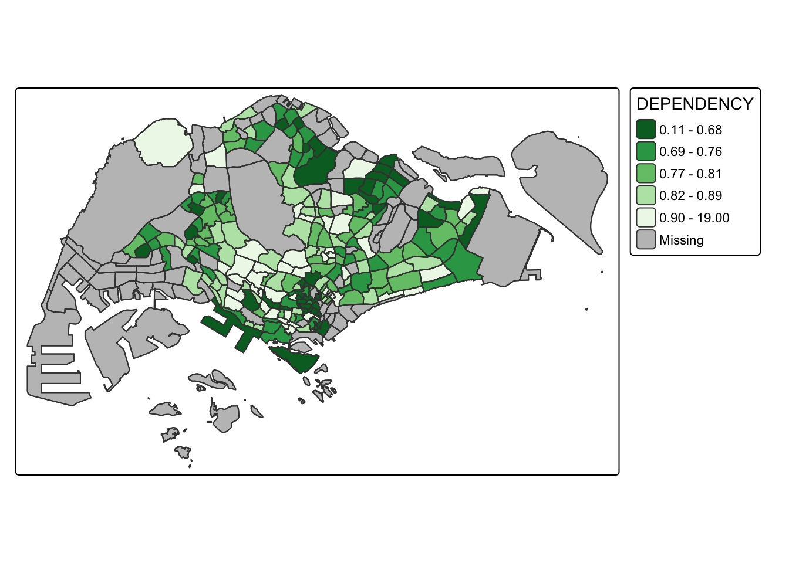
:::call-out tip The color scheme has been reversed :::
A map layout is the arrangement of all map elements into a single cohesive visual. These elements typically include the mapped objects, title, scale bar, compass, margins, and aspect ratios.
The overall appearance of the map is also influenced by colour settings and data classification methods, such as palettes and breakpoints, which determine how data values are grouped and shaded.
In tmap, the legend is a key element that explains how colours or symbols correspond to data values. The package provides several tm_legend() options that allow you to adjust the placement, format, and appearance of the legend.
tm_shape(mpsz_pop2020)+
tm_polygons("DEPENDENCY",
fill.scale = tm_scale_intervals(
style = "jenks",
n = 5,
values = "brewer.greens"),
fill.legend = tm_legend(
title = "Dependency ratio")) +
tm_borders(fill_alpha = 0.5) +
tm_title("Distribution of Dependency Ratio by planning subzone \n(Jenks classification)")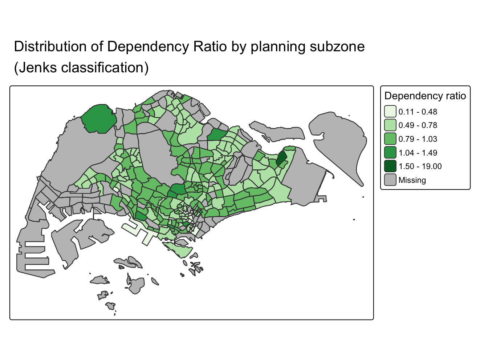
tmap also allows different alyout settings, they can be set using tmap_style()
tm_shape(mpsz_pop2020)+
tm_fill("DEPENDENCY",
style = "quantile",
palette = "-Greens") +
tm_borders(alpha = 0.5) +
tmap_style("classic")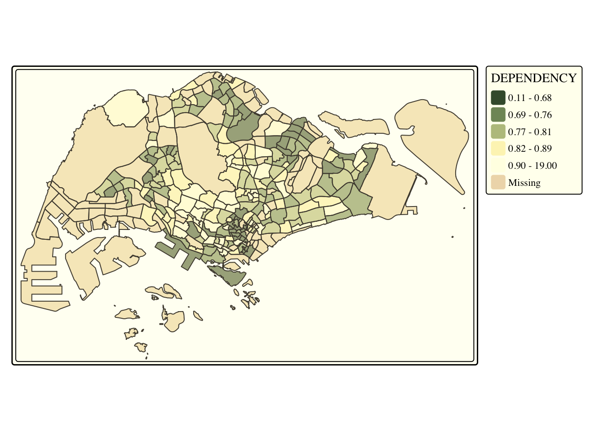
Beyond map style and classification, tmap also allows you to add map furniture—extra elements that enhance readability and orientation. These include a compass, scale bar, and grid lines.
We can add them with:
tm_shape(mpsz_pop2020)+
tm_polygons(fill = "DEPENDENCY",
fill.scale = tm_scale_intervals(
style = "quantile",
n = 5,
values = "brewer.blues"),
fill.legend = tm_legend(
title = "Dependency ratio")) +
tm_title("Distribution of Dependency Ratio by planning subzone") +
tm_layout(frame = TRUE) +
tm_borders(fill_alpha = 0.5) +
tm_compass(type="8star", size = 2) +
tm_grid(alpha =0.2) +
tm_credits("Source: Planning Sub-zone boundary from Urban Redevelopment Authorithy (URA)\n and Population data from Department of Statistics DOS",
position = c("left", "bottom"))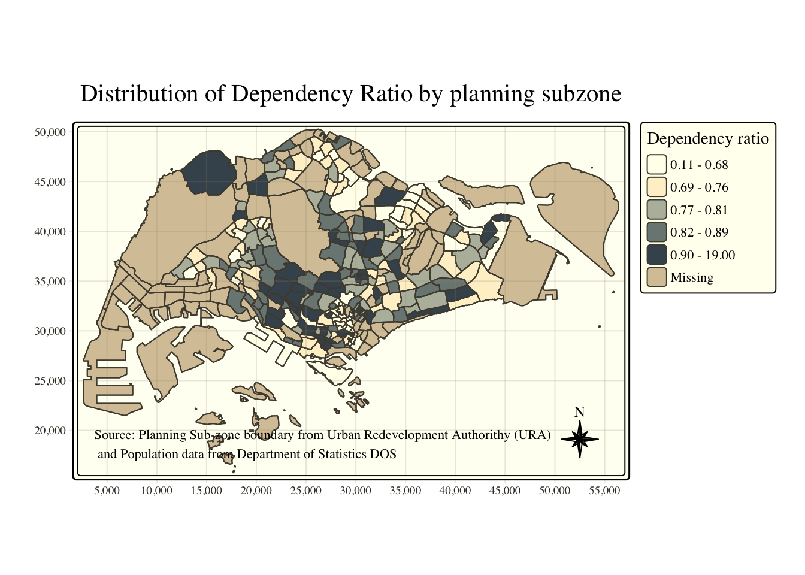
To reset the default style, the code chunk below can be implemented
tmap_style("white")Small multiple maps—also called facet maps—are collections of maps arranged side‑by‑side or stacked vertically. They are especially useful for visualising how spatial relationships change with respect to another variable, such as time.
In tmap, we can create small multiple maps in three ways:
The plot below are created by degining ncols in tm_fill()
tm_shape(mpsz_pop2020)+
tm_fill(c("YOUNG", "AGED"),
style = "equal",
palette = "Blues") +
tm_layout(legend.position = c("right", "bottom")) +
tm_borders(alpha = 0.5) +
tmap_style("white")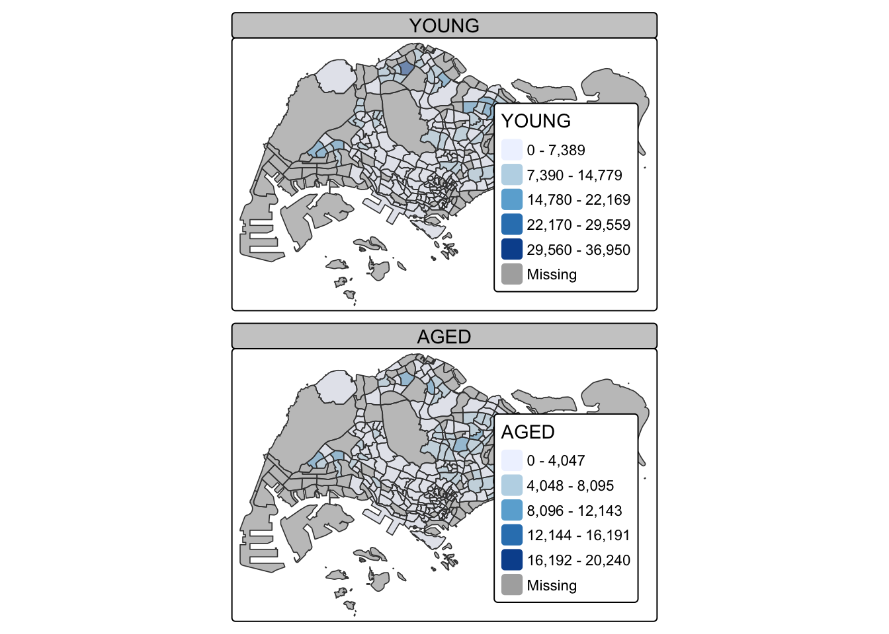
Next, we assign multiple values to at least one of the aesthetic arguments
tm_shape(mpsz_pop2020)+
tm_polygons(c("DEPENDENCY","AGED"),
style = c("equal", "quantile"),
palette = list("Blues","Greens")) +
tm_layout(legend.position = c("right", "bottom"))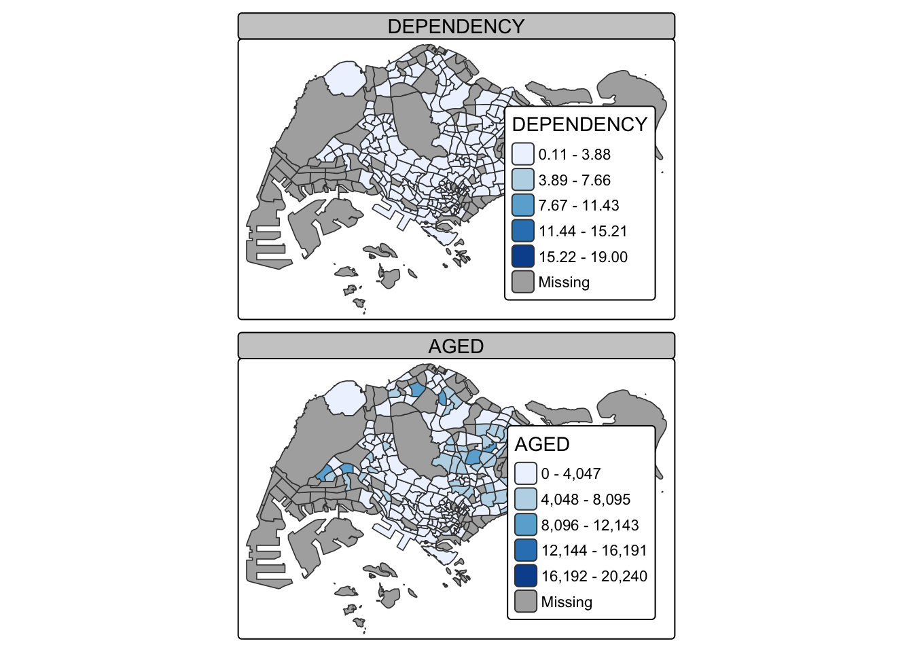
tm_shape(mpsz_pop2020) +
tm_fill("DEPENDENCY",
style = "quantile",
palette = "Blues",
thres.poly = 0) +
tm_facets(by="REGION_N",
free.coords=TRUE) +
tm_layout(legend.show = FALSE,
title.position = c("center", "center"),
title.size = 20) +
tm_borders(alpha = 0.5)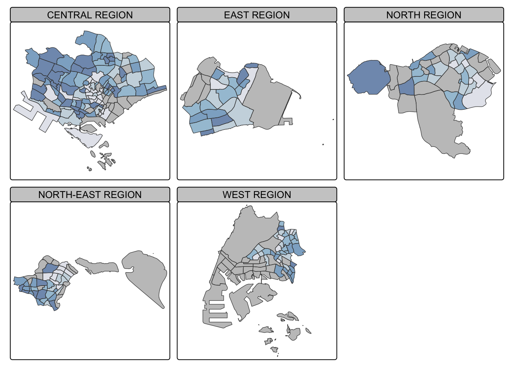
youngmap <- tm_shape(mpsz_pop2020)+
tm_polygons("YOUNG",
style = "quantile",
palette = "Blues")
agedmap <- tm_shape(mpsz_pop2020)+
tm_polygons("AGED",
style = "quantile",
palette = "Blues")
tmap_arrange(youngmap, agedmap, asp=1, ncol=2)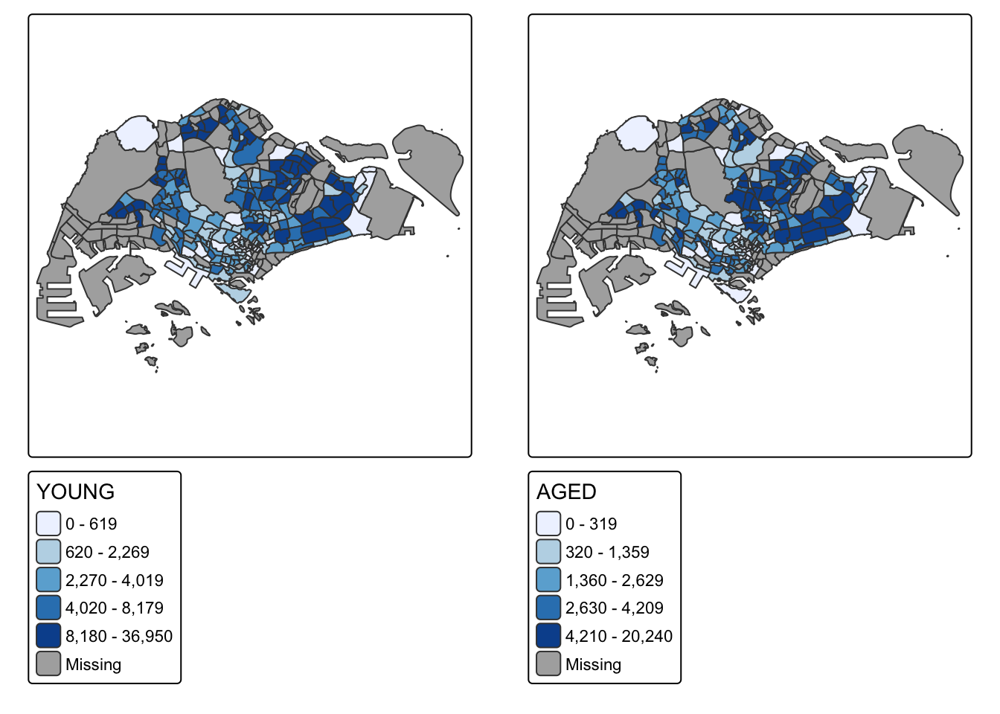
Use selection function to map spatial objects meeting the selection criterion
tm_shape(mpsz_pop2020[mpsz_pop2020$REGION_N=="CENTRAL REGION", ])+
tm_fill("DEPENDENCY",
style = "quantile",
palette = "Blues",
legend.hist = TRUE,
legend.is.portrait = TRUE,
legend.hist.z = 0.1) +
tm_layout(legend.outside = TRUE,
legend.height = 0.45,
legend.width = 5.0,
legend.position = c("right", "bottom"),
frame = FALSE) +
tm_borders(alpha = 0.5)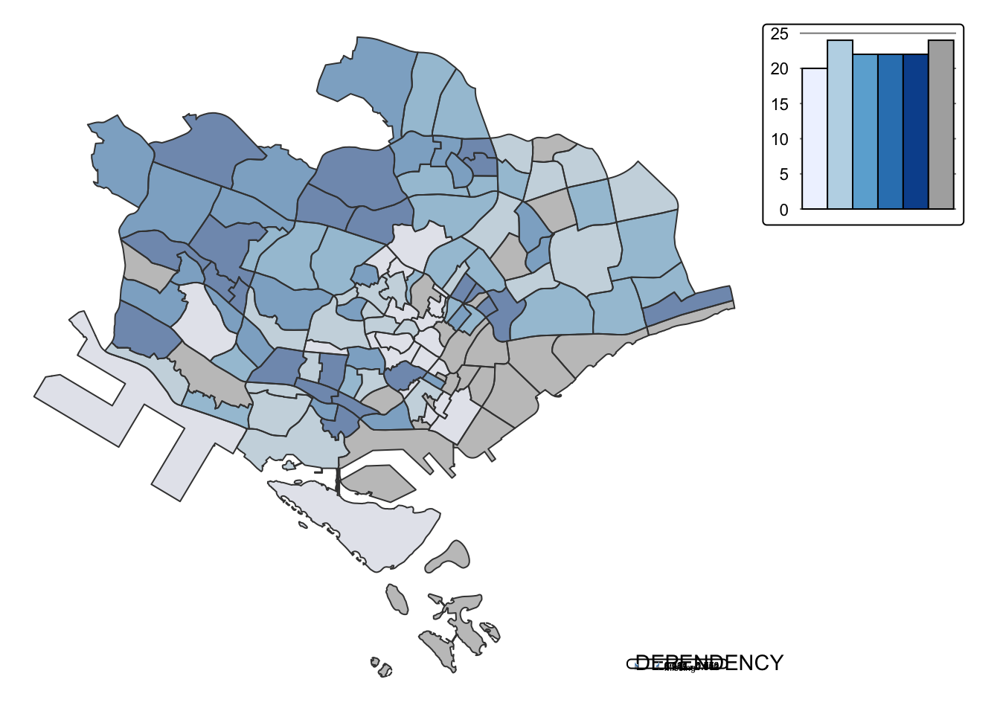